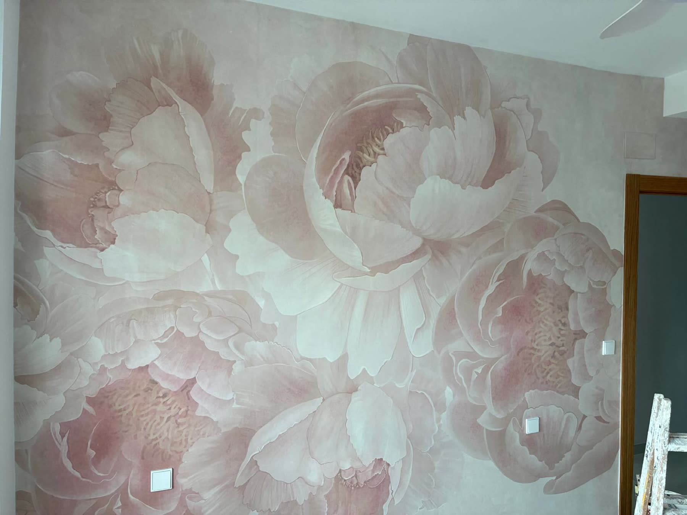
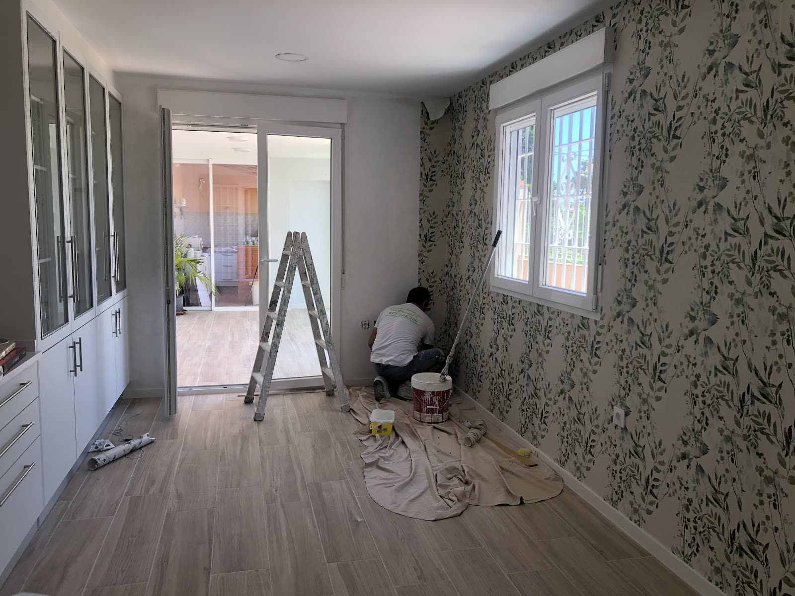
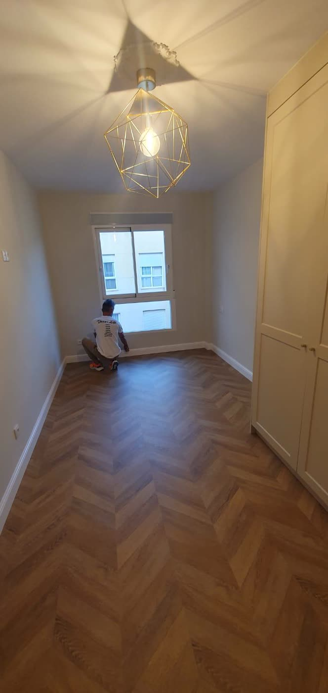
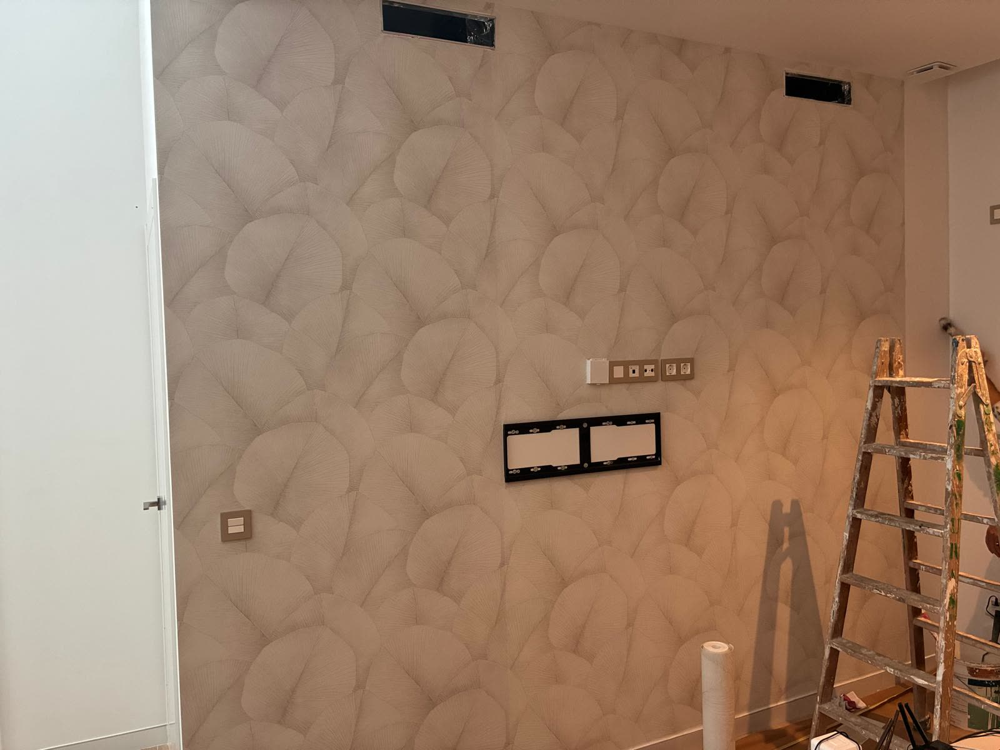
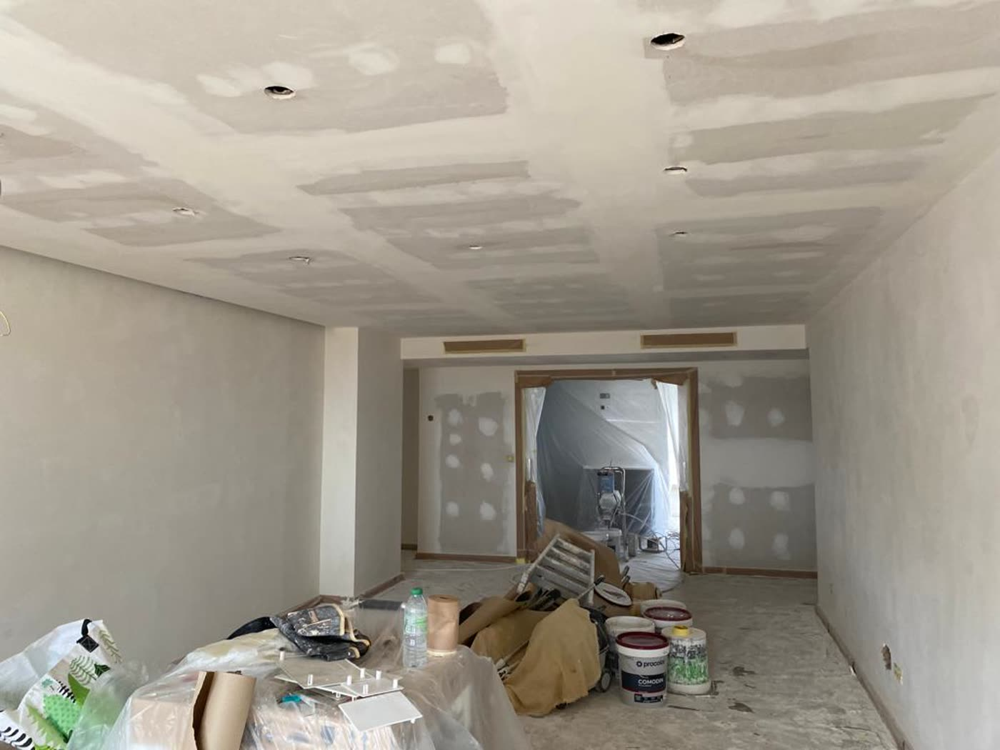
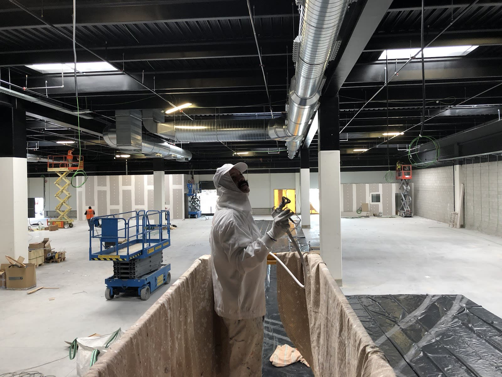
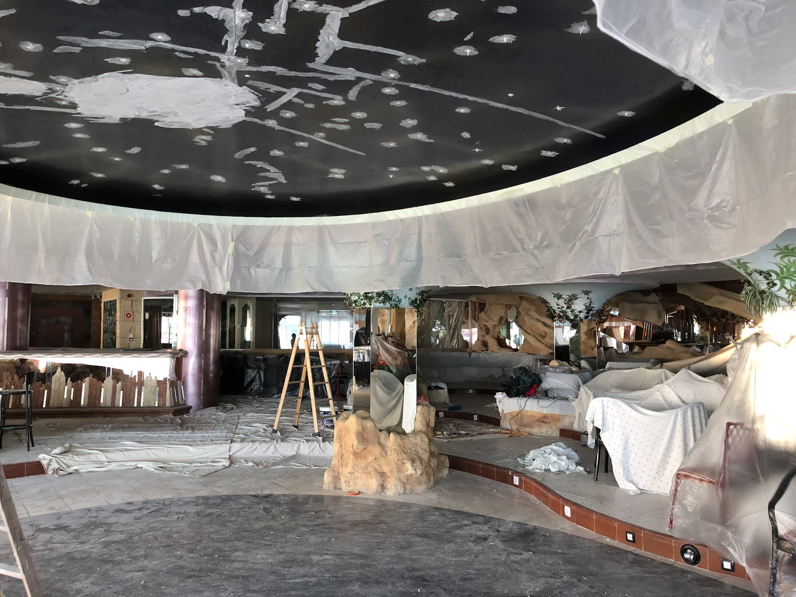
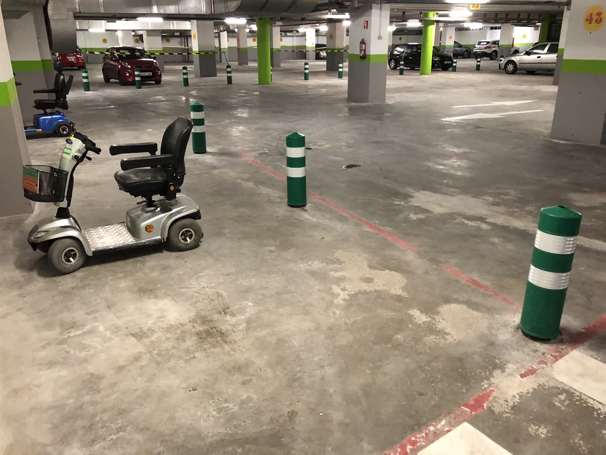

“En mi piso de Balcón de Poniente de Benidorm me han quitado el gotelé y me han dejado las paredes lisas y con un acabado muy profesional. Estoy muy contento con la cordialidad de trato y el resultado de los trabajos realizados. Lo recomendaría sin lugar a dudas.”

Pintores en Benidorm desde hace 30 años
Pintura y Decoración Olivares
Pintura, alisado de paredes, papel pintado y fotomurales, microcemento y suelos. Trabajos como este, en Benidorm y alrededores, con un equipo que llega a su hora y deja la casa limpia.
5,0en Google
157reseñas
30años en Benidorm
Una empresa de pintura de Benidorm que hace lo de siempre, bien, y lo de ahora, también: alisar el gotelé, empapelar una pared entera con un fotomural, o dejar un suelo nuevo en una tarde.
Trabajos
Lo que sale de sus manos.
Fotos de obras reales, hechas por Olivares en Benidorm: viviendas, locales y naves.







Alisado y pintura
Fuera el gotelé.
Quitar el gotelé y dejar la pared lisa es el trabajo que más piden en Benidorm, y el que más reseñas trae: pisos enteros alisados y pintados, con los muebles tapados y la casa recogida al terminar.
Pintura interior y exterior, en viviendas, locales, comunidades y naves.
Presupuesto para alisar y pintar ›Un piso, de gotelé a lisoOrientativo
Día 1
Se tapa y se protegeMuebles, suelos y ventanas cubiertos antes de empezar.
Días 1-2
Se alisaCapas de pasta sobre el gotelé y lijado hasta dejar la pared plana.
Día 3
Se imprima y se pintaFondo y dos manos del color elegido.
Último
Se recogeSe retiran plásticos y cintas y se deja la casa como estaba.
Los días dependen del tamaño del piso y del estado de las paredes. Se dicen en el presupuesto.
Papel pintado y fotomurales
Una pared que se mira.
Papel pintado clásico o texturizado, y fotomurales a medida como el de la portada. Se mide la pared, se corta, se casa el dibujo y se instala sin burbujas ni juntas a la vista.
Para salones, dormitorios, comercios y hoteles.
Presupuesto de papel pintado ›Servicios
Paredes, techos y suelos.
Pulsa el que te interese y escríbenos.
Pintura interior y exterior
Viviendas, locales, comunidades y naves.
Alisado de paredes
Quitar el gotelé y dejar la pared lisa.
Papel pintado y fotomurales
Medido, cortado e instalado.
Microcemento y estuco
Suelos, paredes, baños y cocinas.
Tarima flotante y suelo vinílico
Suelos nuevos sin obra.
Césped artificial
Terrazas, jardines y zonas comunes.
Hidrofugado de piedra
Protección contra la humedad en piedra natural.
Comunidades y empresas
Garajes, escaleras, fachadas y locales.
Lo que dicen sus clientes
Cinco sobre cinco en Google.
157 reseñas y una nota media de 5,0. Estas son tres, tal cual las escribieron sus clientes.
“He acabado súper contenta con el trabajo realizado por esta empresa en mi vivienda. Los contraté para realizar alisado y pintura de todo el piso y ha quedado de 10. Muy amables, limpios y trabajadores. Muchas gracias a todo el equipo de pinturas Olivares, en especial agradecer a Nabil por todo el trabajo realizado.”
“Señor Jesús y su equipo grandes profesionales! Puntualidad y amabilidad. Muy conformes con la ejecución de las obras. Trabajos realizados: Pintura Sala, Pintura Bar, y Instalación de suelo vinílico. Gracias”
Horario y contacto
Calle Viena, 6, Benidorm.
Horario
| Lunes | 8:00–18:00 |
| Martes | 8:00–18:00 |
| Miércoles | 8:00–18:00 |
| Jueves | 8:00–18:00 |
| Viernes | 8:00–18:30 |
| Sábado | Cerrado |
| Domingo | Cerrado |
Contacto
- C/ Viena, 6
03503 Benidorm (Alicante) - 677 72 85 58
- Escribir por WhatsApp
- Lunes a viernes, de 8:00 a 18:00. Los presupuestos se hacen en la vivienda o el local.
El mapa es de Google y usa sus cookies. Se carga solo si lo pides.
Presupuesto
Mándanos una foto de la pared.
Por WhatsApp, con los metros aproximados y qué quieres hacer. Se pasa a verlo y se da el presupuesto por escrito.